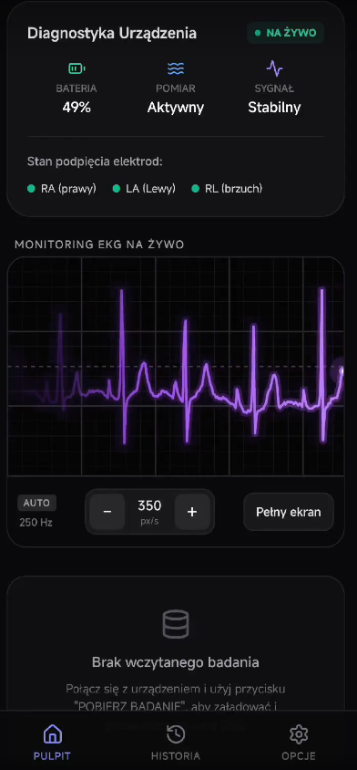
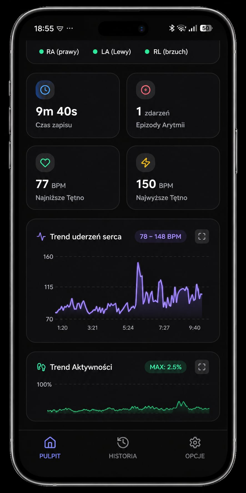
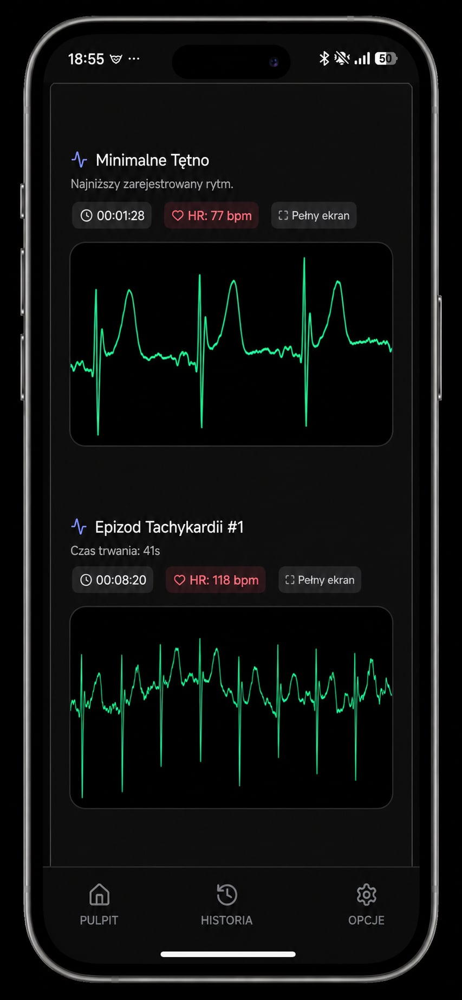
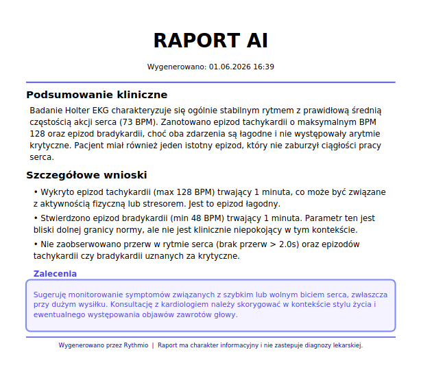

Kardiologia Live w Twoim Telefonie
Aplikacja mobilna Rythmio stanowi centrum dowodzenia Twoim sercem. Po naciśnięciu dedykowanej ikony Bluetooth i nawiązaniu stabilnego połączenia bezprzewodowego z urządzeniem, zyskujesz pełną kontrolę nad trwającym badaniem i natychmiastowy wgląd w kondycję swojego organizmu.
Monitorowanie EKG na Żywo
Uruchomienie trybu Live pozwala na strumieniowanie sygnału EKG w czasie rzeczywistym bezpośrednio na ekran smartfona. Idealne rozwiązanie do natychmiastowej weryfikacji poprawności zapisu.
Szybkie Odświeżenie Statusu
Po wyłączeniu podglądu na żywo, ikona odświeżania pozwala błyskawicznie pobrać z urządzenia status pakietów: poziom naładowania baterii, informację o prawidłowym podpięciu elektrod oraz potwierdzenie, czy pomiar jest stabilny.
Pełna swoboda widoku: Zarówno wykres fali EKG w trybie Live, jak i dobowe wykresy tętna są w pełni skalowalne. Możesz swobodnie obracać telefon – interfejs automatycznie dopasuje się do widoku pionowego lub poziomego, ułatwiając precyzyjną analizę załamków.


Pobieranie i Automatyczna Analiza
Kliknięcie ikony synchronizacji uruchamia szybki transfer zapisanego materiału z karty microSD wprost do pamięci telefonu. Aplikacja natychmiast przelicza surowe dane, aktualizując kluczowe metryki diagnostyczne na pulpicie:
Wskaźniki aktualizowane po synchronizacji:
| Czas trwania zapisu | Precyzyjny licznik czasu zapisanego badania |
| Trendy tętna | Automatyczne wyznaczenie średniego, najniższego oraz najwyższego BPM |
| Licznik arytmii | Suma zarejestrowanych dobowych epizodów anomalii |
| Wizualizacja graficzna | Generowanie wykresu dobowego tętna oraz wykresu średniej aktywności fizycznej |
Dzięki korelacji tętna z akcelerometrem wbudowanym w urządzenie, od razu widzisz, czy wyższy puls wynikał z naturalnego wysiłku fizycznego, czy był niepokojącą anomalią w spoczynku.
Raport Kliniczny i Wsparcie AI
Z poziomu aplikacji jednym kliknięciem wygenerujesz kompleksowy Raport Kliniczny. Zawiera on pełne zestawienie matematyczne sesji pomiarowej, w tym całkowitą liczbę wykrytych zespołów QRS, liczbę tachykardii, bradykardii oraz groźnych pauz trwających powyżej 2.0s.
✍️ Dziennik Zdarzeń i Notatki Pacjenta
Gdy podczas badania poczujesz się gorzej i wciśniesz dolny przycisk na obudowie urządzenia, system postawi znacznik w sygnale. Po zgraniu danych, aplikacja pozwoli Ci dodać własny komentarz do tego momentu (np. opisując duszność czy stres), dając lekarzowi pełny kontekst sytuacyjny.
Przegląd anomalii i wycinków
Aplikacja automatycznie wycina z sygnału i archiwizuje dokładne momenty wystąpienia anomalii wraz z czasem ich trwania. Wszystkie wycinki raportu (tak jak podgląd na żywo) są w pełni interaktywne i skalowalne pionowo oraz poziomo.
🤖 Zintegrowany Asystent AI
Wbudowany moduł sztucznej inteligencji przetwarza badanie i generuje Raport AI z podsumowaniem klinicznym. Klasyfikuje on epizody jako "łagodne" lub "krytyczne", ocenia ciągność pracy serca i dostarcza wstępne zalecenia dotyczące stylu życia lub pilności konsultacji lekarskiej.
Gotowe opracowanie możesz natychmiast zapisać w formacie PDF, uzupełnić adres e-mail i bezpośrednio z poziomu telefonu przesłać swojemu kardiologowi.


Dodatkowe Możliwości Aplikacji
Rythmio to nie tylko bieżący pomiar, ale też wygodne zarządzanie historią zdrowia oraz funkcje ułatwiające codzienną dostępność.
Dedykowane Archiwum
Osobna zakładka historyczna gromadzi wszystkie wykonane do tej pory badania kardiologiczne. Masz do nich stały dostęp, a w celu optymalizacji pamięci telefonu lub zachowania porządku, stare i nieaktualne rekordy możesz w każdej chwili bezpowrotnie usunąć.
Asystent Głosowy
W menu ustawień zaawansowanych możesz włączyć inteligentnego asystenta audio. System będzie regularnie odczytywał komunikaty głosowe o zaktualizowanych danych telemetrycznych i stanie pracy serca – idealne podczas treningu lub dla osób starszych.
Bezpieczeństwo Danych
Wszystkie badania zapisywane lokalnie w aplikacji podlegają restrykcyjnemu szyfrowaniu. Eksport do formatów PDF oraz CSV realizowany jest za pomocą bezpiecznych protokołów systemowych, dbając o pełną poufność dokumentacji medycznej.
⚠️ Ważna uwaga medyczna
Wykrycie przez algorytmy aplikacji lub moduł AI znacznej liczby epizodów arytmicznych bądź anomalii wymaga weryfikacji lekarskiej. Wygenerowane automatycznie wycinki EKG oraz Raporty AI mają charakter wyłącznie informacyjny i nie zastępują profesjonalnej diagnozy medycznej ani badania przeprowadzonego przez lekarza kardiologa.